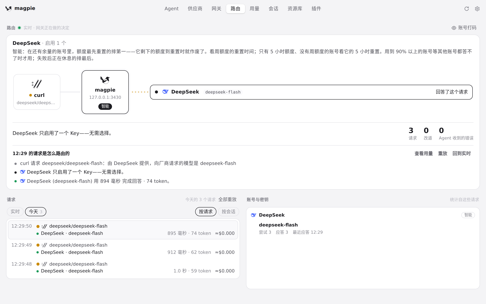
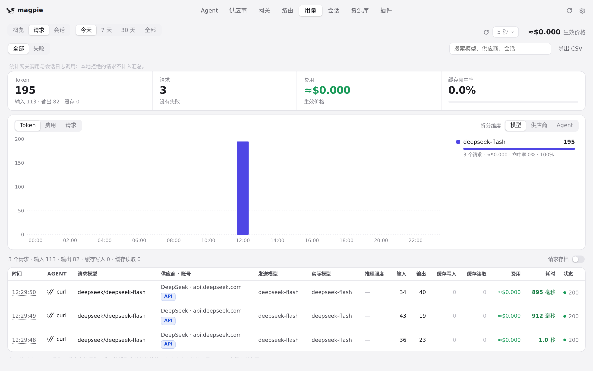
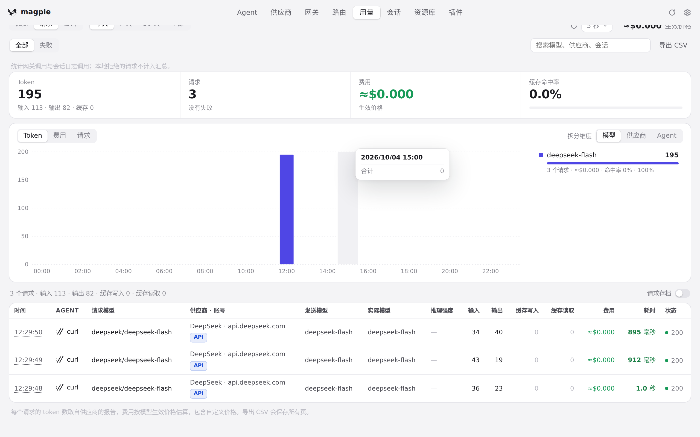

#784 界面预览
commit e76edbb · 回到 PR · 「用量 › 请求」和「路由」两页各新增了一个「调用用途」筛选（把 agent 记录的各种 kind 归并成统一用途，如未标记、标题、子代理等）来过滤请求；路由页的统计、失败请求入口和最新请求故事也改为跟随所选用途，未筛选时仍显示网关累计值。用途目录改由 usage.PurposeKinds 生成 purposes.js。
红线是鼠标走过的轨迹，红色圆环是一次点击；底部文字是这一步在做什么。空格暂停，← → 逐段查看。
路由页的用途筛选与统计 · 路由页打开时的统计（未筛选）
路由页的用途筛选与统计 · 请求列表上方的筛选行
路由页的用途筛选与统计 · 网关保留的最近 3 个请求
路由页的用途筛选与统计 · 「今天」这一天留下的请求

路由页的用途筛选与统计 · 这一天视图下的统计与最近一个请求
 用量页按用途筛选请求 · 请求列表上方新增的「调用用途」
用量页按用途筛选请求 · 请求列表上方新增的「调用用途」

用量页按用途筛选请求 · 请求列表上方的筛选控件

用量页按用途筛选请求 · 按「今天」列出的请求列表